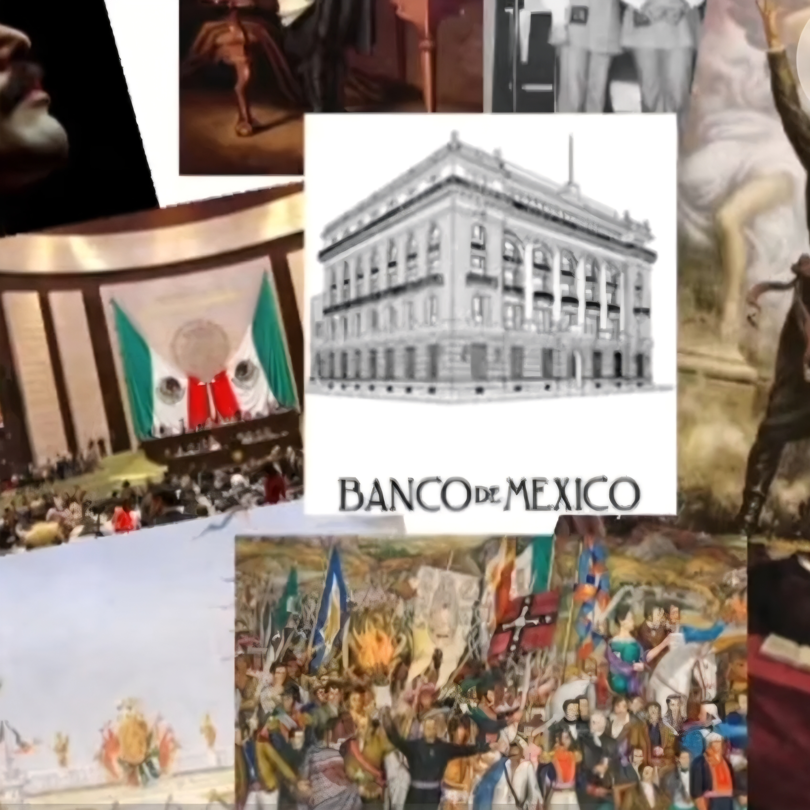
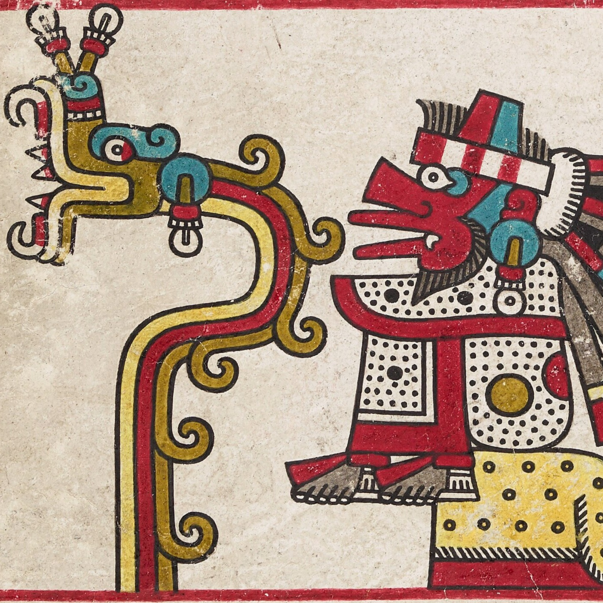

- El primer Grito oficial: Ocurrió en 1812 en el pueblo de Huichapan, Hidalgo, organizado por Ignacio López Rayón.
- 5 de septiembre: Día Internacional de la Mujer Indígena.
- Día Nacional del Maíz: Se celebra cada 29 de septiembre en México para reconocer la importancia de este grano en la cultura y la agricultura del país.
- El Himno Nacional: Su primera interpretación pública oficial ocurrió un 15 de septiembre de 1854.
- Los colores patrios en la comida: Los tradicionales chiles en nogada fueron creados por monjas agustinas en Puebla para celebrar a Agustín de Iturbide. Tienen los colores del Ejército Trigarante (verde, blanco y rojo).

Mitos

- Hidalgo tocó la campana: Falso. Quien tocó la campana de la iglesia de Dolores fue el campanero del pueblo, José Galván.
- El Pípila existió realmente: Es un mito. Los historiadores no han encontrado pruebas reales de que este personaje haya roto la puerta de la Alhóndiga de Granaditas.
- El Grito fue el 15 de septiembre: Falso. El llamado a las armas del cura Miguel Hidalgo ocurrió en la madrugada del 16 de septiembre de 1810. La fiesta se pasó al 15 por una tradición y por el cumpleaños del expresidente Porfirio Díaz.